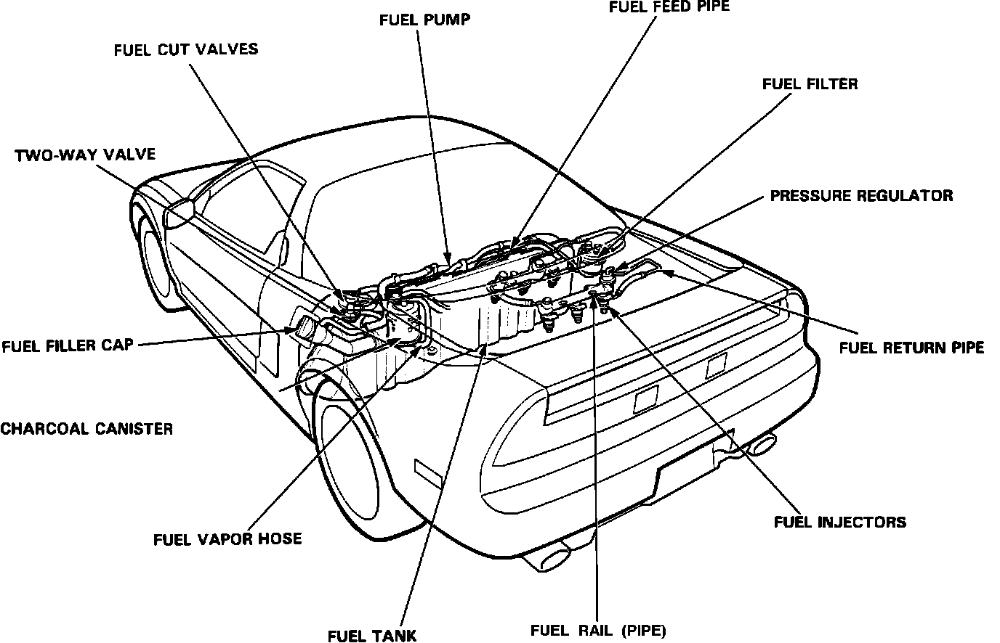

Fuel Filter: Locations
Component Locations:

FUEL PUMP RESISTOR
In engine compartment, right front firewall area.
INJECTOR RESISTOR
Right rear of engine compartment.
Fuel System:

FUEL CUT-OFF VALVES
Two valves, one each located on the top of the fuel tank on the left and right sides.
FUEL FILTER
Right side of the firewall in the engine compartment.
FUEL INJECTORS
Three on front and rear of the engine directly above the intake valves.
FUEL PRESSURE REGULATOR
Right side of the rear fuel rail.
FUEL PUMP
Inside the fuel tank.
FUEL RAIL
Two rails, one above each row of injectors.
FUEL LINES
Routed over the fuel tank to the fuel manifold assembly.
FUEL TANK
Rear center of chassis, ahead of rear wheels.